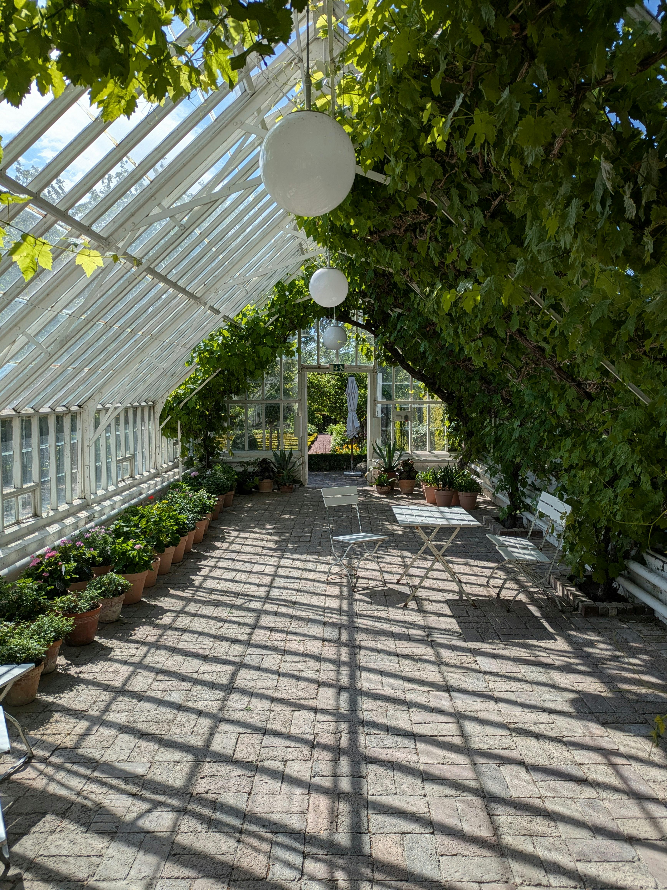
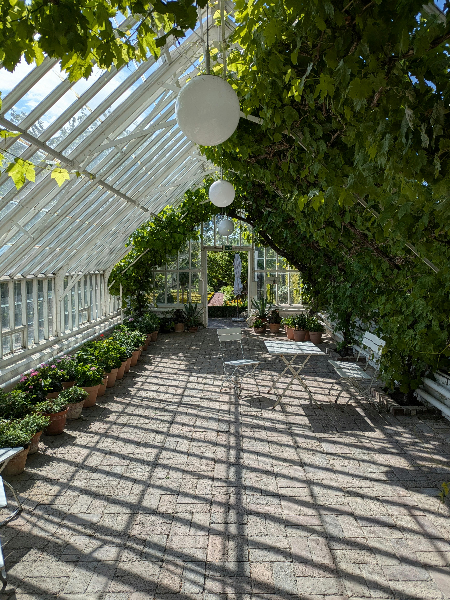
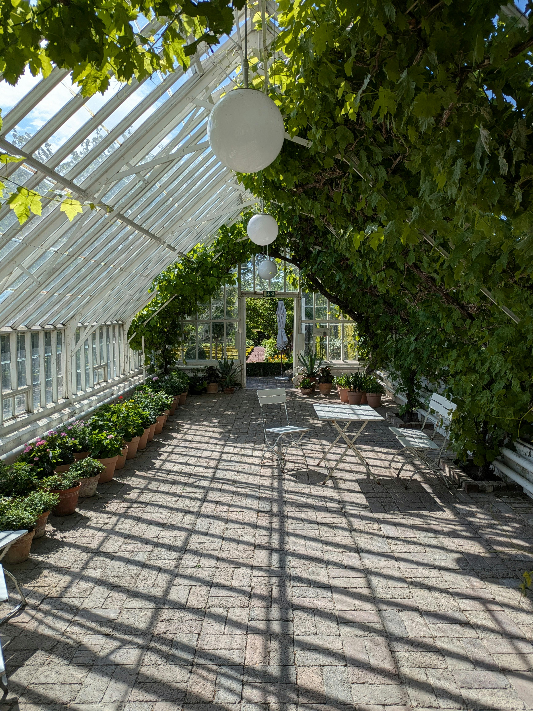
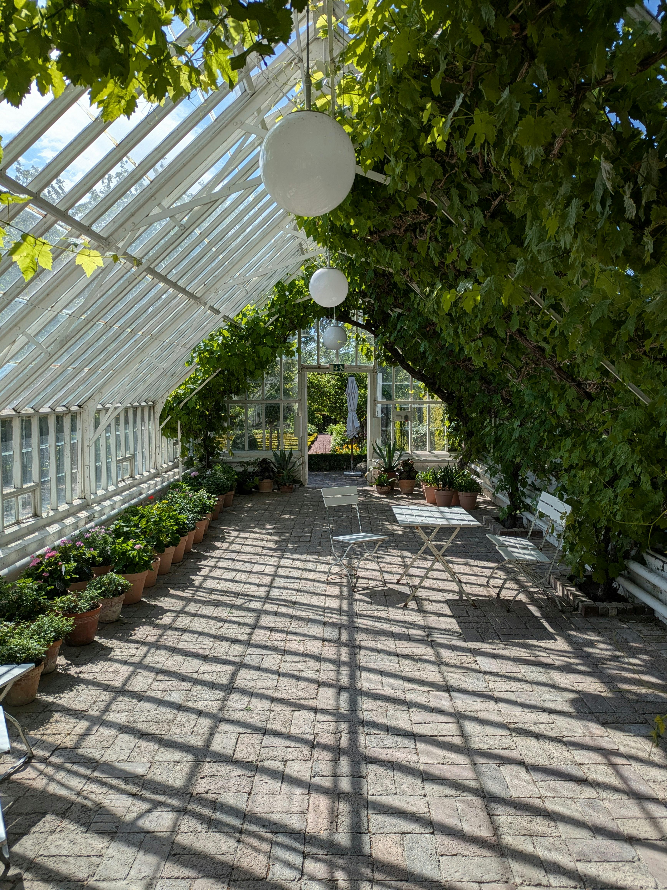

 

Aloe Vera - conhecida por suas propriedades de cura.
Camomila - amplamente usada para aliviar o estresse e melhorar o sono.
Hortelã - popular por sua fragrância e benefícios digestivos.
Girassol - símbolo de felicidade e otimismo.
Orquídea - representa luxo, beleza e força.
Rosa - a flor clássica do amor e da paixão.